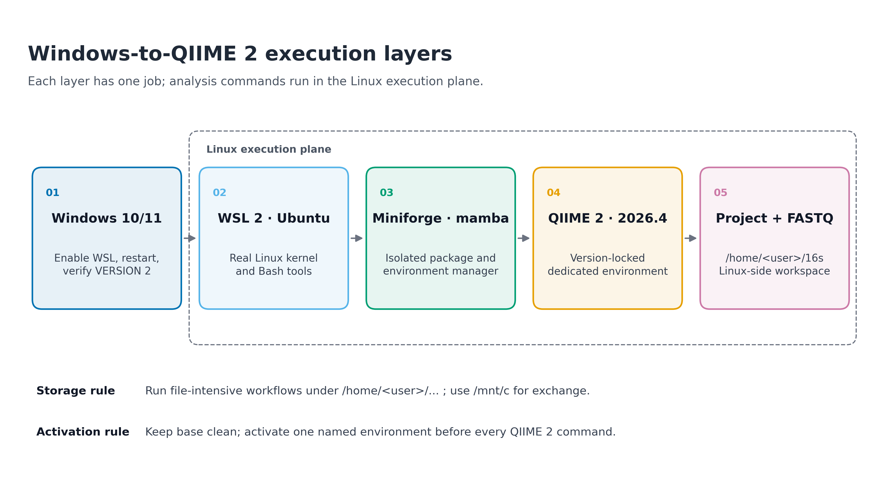
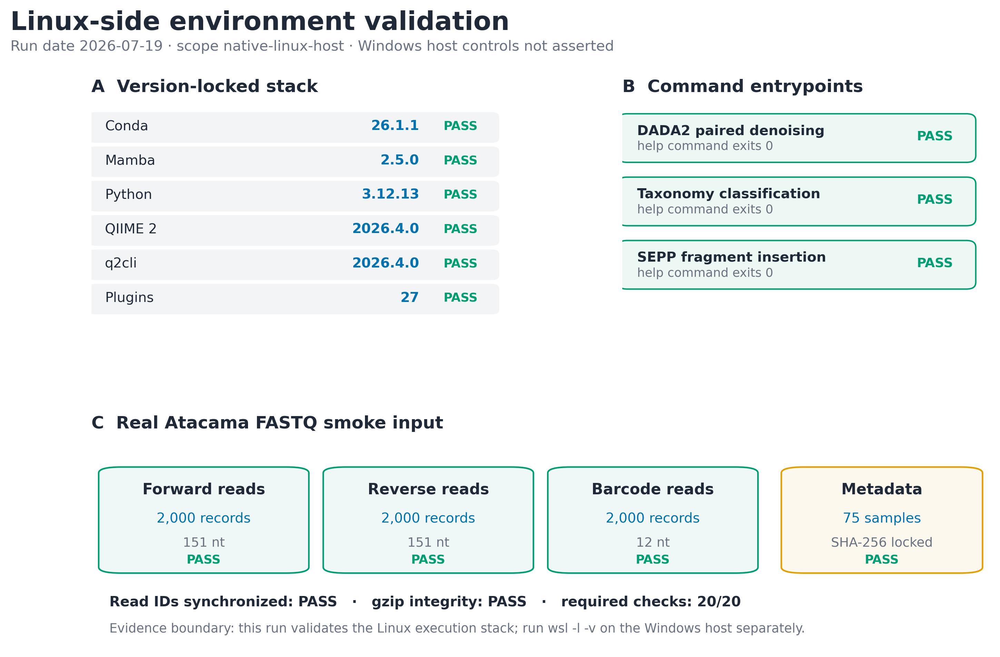

install.packages(c(
"ggplot2", "dplyr", "readr", "scales", "patchwork"
))WSL2 + conda/mamba（Windows 用户主线）
Windows 的虚拟化设置与 Linux 中的软件环境需要分别检查。PowerShell 用于管理 WSL；进入 Ubuntu 后，再安装和运行分析工具。
Windows 上怎样建立稳定的分析环境？
在 Windows 上运行 QIIME 2，首先要确定命令到底交给哪个操作系统执行。装在 Windows 中的 Python、WSL 中的 Python，以及某个 conda 环境中的 Python 可以同时存在；它们名字相同，却不共享同一套包。安装报错前，先分清这一层关系，才能判断应调整 WSL、激活环境还是修复工具依赖。


重要把 Windows 管理与 Linux 分析分开
在 Windows 上做 16S 命令行分析时，PowerShell 只用来安装和管理 WSL；conda、mamba、qiime、FASTQ 与项目代码都放到 Ubuntu/WSL2 终端里运行。不要在 Windows Python、Anaconda Prompt 与 WSL 的 Linux 环境之间混装软件。
Linux 工具能运行，不代表 WSL 的所有设置都已正确
一次 qiime info 成功只能证明当前 Linux shell 中的 QIIME 2 可启动，不能自动证明：
- Windows 已启用虚拟化；
- Ubuntu 发行版运行在 WSL2 而不是 WSL1；
- 项目位于 Linux 文件系统而不是
/mnt/c； - FASTQ 没有损坏；
- DADA2、分类器或 SEPP 的命令入口已经注册。
因此本篇把验证拆成两部分：
| 验证面 | 在哪里运行 | 成功标准 |
|---|---|---|
| Windows / WSL 控制面 | 管理员 PowerShell | wsl -l -v 的目标发行版 VERSION 为 2 |
| Linux 执行面 | Ubuntu / WSL2 Bash | 版本、插件入口、环境文件和真实 FASTQ 检查全部通过 |
随文实测记录的 Linux 执行面为 native-linux-host，内核 6.8.0-49-generic、架构 x86_64。这与 WSL2 内需要满足的 Linux 软件合同相同，但不声称服务器运行在 Windows 上。
开始前：数据与运行环境
在 Linux 或 WSL2 的项目文件夹中运行下面的下载命令。Windows 用户先完成下文的 WSL2 安装，再回到 Ubuntu 终端执行。下载后保留这里的相对目录，后续命令使用同一组文件。
base_url="https://raw.githubusercontent.com/petemeng/microbiome-best-practices/3cb6a817e0c73ab7ecbec1cedc1ad80cbb9ecfaa"
for file in \
data/small/fastq/barcodes.fastq.gz \
data/small/fastq/forward.fastq.gz \
data/small/fastq/metadata.tsv \
data/small/fastq/reverse.fastq.gz \
data/small/fastq/source_summary.json \
env/qiime2.yml \
scripts/validate_wsl2_conda.py
do
mkdir -p "$(dirname "$file")"
curl --fail --location --retry 3 "$base_url/$file" --output "$file" || break
done本次分析的数据、环境与图形设置
Windows 侧条件
- Windows 11，或 Windows 10 version 2004 / Build 19041 及以上；
- 管理员权限；
- BIOS/UEFI 虚拟化已启用；
- 至少预留 20 GB 可用空间，推荐 50 GB 以上；
- 网络可访问 Microsoft、GitHub、conda-forge 与 QIIME 2 package channel。
按 Win + R，输入 winver 查看 Windows 版本。
Linux 侧随文输入
env/qiime2.yml
data/small/fastq/forward.fastq.gz
data/small/fastq/reverse.fastq.gz
data/small/fastq/barcodes.fastq.gz
data/small/fastq/metadata.tsv
data/small/fastq/source_summary.jsonFASTQ 来自 QIIME 2 Atacama soils 2024.5 paired-end 教程 1% 数据的确定性 2,000-record 摘录。每个文件的 SHA-256、抽取规则和官方来源保存在 source_summary.json。
R 作图依赖与函数
环境章节的命令不依赖 R；将审计表转换为论文补充图时使用以下函数：
library(ggplot2)
library(dplyr)
library(readr)
library(scales)
set.seed(20260719)
pal_pub <- c(
"#0072B2", "#D55E00", "#009E73", "#CC79A7",
"#E69F00", "#56B4E9", "#F0E442", "#999999"
)
scale_color_pub <- function(...) {
ggplot2::scale_color_manual(values = pal_pub, ...)
}
scale_fill_pub <- function(...) {
ggplot2::scale_fill_manual(values = pal_pub, ...)
}
theme_pub <- function(base_size = 12) {
ggplot2::theme_bw(base_size = base_size, base_family = "sans") +
ggplot2::theme(
panel.grid = ggplot2::element_blank(),
axis.text = ggplot2::element_text(color = "black"),
axis.ticks = ggplot2::element_line(
color = "black", linewidth = 0.3
),
plot.title.position = "plot",
legend.key = ggplot2::element_blank(),
legend.background = ggplot2::element_rect(
fill = scales::alpha("white", 0.6),
color = NA
)
)
}
save_pub <- function(
plot,
file_base,
width = 180,
height = 115,
units = "mm",
dpi = 300,
write_tiff = TRUE
) {
dir.create(dirname(file_base), recursive = TRUE, showWarnings = FALSE)
ggplot2::ggsave(
paste0(file_base, ".pdf"),
plot,
width = width,
height = height,
units = units,
device = grDevices::cairo_pdf
)
ggplot2::ggsave(
paste0(file_base, ".png"),
plot,
width = width,
height = height,
units = units,
dpi = dpi,
bg = "white"
)
if (isTRUE(write_tiff)) {
ggplot2::ggsave(
paste0(file_base, ".tiff"),
plot,
width = width,
height = height,
units = units,
dpi = dpi,
compression = "lzw",
bg = "white"
)
}
invisible(plot)
}WSL2、conda 与 mamba 各自解决什么问题
WSL2 提供真正的 Linux 执行层
WSL（Windows Subsystem for Linux）允许 Windows 同时运行 Linux 发行版。WSL2 使用受管理的轻量虚拟机和真实 Linux kernel，提供完整 system-call compatibility；这正是许多只发布 Linux/macOS 构建的生信工具需要的运行条件。
可以把它理解为五层：
Windows 10/11
└── WSL2
└── Ubuntu Linux
└── Miniforge / conda / mamba
└── QIIME 2 environment + project + FASTQWindows 与 WSL2 仍然是两套文件系统、两套可执行文件和两套环境变量。下面两条命令即使名字相似，实际运行位置完全不同：
# Windows PowerShell
wsl.exe --list --verbose# Ubuntu / WSL2
uname -a前者管理 WSL 发行版，后者查询 Linux 内核。不要在 PowerShell 中直接期待 qiime，也不要在 Ubuntu 中安装 Windows 版 Anaconda。
文件放在哪里会影响 I/O
在 WSL 终端中：
/home/<user>/project位于 Linux 文件系统；/mnt/c/Users/<user>/project是挂载进来的 Windows C 盘。
FASTQ 解压、DADA2 临时文件、feature table 和参考库都会产生大量小文件或频繁读写。Microsoft 的官方建议是：Linux 命令行处理的项目应存放在 WSL 的 Linux 文件系统中。因此本项目采用：
/home/<user>/projects/microbiome-best-practices/需要用 Windows 资源管理器查看时，在项目目录运行：
explorer.exe .或在 Windows 地址栏访问：
\\wsl$\Ubuntu\home\<user>\projects/mnt/c 适合作为文件交换入口，不适合作为 I/O 密集分析的主工作目录。
conda 管环境，mamba 加速求解
conda 同时承担三件事：
- 创建相互隔离的 environment；
- 解析并安装软件及依赖；
- 激活环境，修改当前 shell 的
PATH。
mamba 使用兼容 conda 的环境和包格式，并提供更快的依赖求解。两者不是两套互不相干的软件仓库；常见用法是：
mamba env create ... # 创建或安装，求解更快
conda activate ... # 激活环境，shell 集成成熟
qiime info # 运行环境内的软件环境隔离的关键不是“装了几个 conda”，而是让每个项目明确回答：
当前激活哪个环境？
环境由哪个 YAML 创建？
YAML 的 SHA-256 是什么？
关键命令真的能启动吗？base 不是分析环境
Miniforge 的 base 负责提供 conda/mamba 本身。把 QIIME 2、R、Python 数据科学包和其他流程全部装进 base，容易出现依赖被相互升级或降级、环境无法重建、命令来自错误路径等问题。
推荐命名包含软件和 release：
microbiome-qiime2-2026.4激活后检查：
echo "$CONDA_DEFAULT_ENV"
which python
which qiime三条输出应指向同一个环境语境。只看到 shell 提示符前有括号还不够，which 才能揭示实际命令来源。
“安装成功”至少包含四层证据
| 层级 | 检查 | 能证明什么 |
|---|---|---|
| 控制面 | wsl -l -v |
发行版运行在 WSL2 |
| 环境面 | conda env list、YAML SHA-256 |
环境存在且来源固定 |
| 软件面 | qiime info、插件 --help |
CLI 和关键插件入口可启动 |
| 数据面 | gzip -t、SHA-256、record 同步 |
真实输入能被无损读取 |
只有四层都通过，才值得继续投入数小时运行去噪或分类注释。
深入：为什么一个环境文件还不等于完全可复现
环境文件有不同强度：
conda env export --from-history只记录显式安装的顶层包，易读但不锁全部依赖；conda env export会记录完整解析结果，但不同平台仍可能解析出差异；conda list --explicit最接近平台特异的精确包 URL 锁；- 软件自己的 artifact provenance、命令日志、输入校验值仍需另外保存。
本项目的 env/qiime2.yml 来自 QIIME 2 2026.4 Linux distribution，并固定完整包解析结果。它的 SHA-256 为：
68b0e9b974937525b71cca3dec48b7dc5b6135f588a941d1313c118c2a41f4b5环境文件仍不能证明机器支持相应架构、下载未中断或命令入口已注册，所以还要执行本篇的审计。
安装Linux环境并用真实FASTQ检查
在管理员 PowerShell 安装 WSL2
关闭 Ubuntu、Anaconda Prompt 与普通 PowerShell。右键 PowerShell，选择 Run as administrator：
wsl.exe --install命令完成后重启 Windows。首次打开 Ubuntu 时，根据提示创建 Linux 用户名与密码。Linux 密码输入时终端不会显示星号，这是正常行为。
若 wsl --install 只显示帮助，先查看可用发行版：
wsl.exe --list --online
wsl.exe --install -d Ubuntu安装后更新 WSL，并确认发行版版本：
wsl.exe --update
wsl.exe --status
wsl.exe --list --verbose目标输出的最后一列必须为 2，例如：
NAME STATE VERSION
* Ubuntu Running 2如果目标发行版仍为 WSL1：
wsl.exe --set-default-version 2
wsl.exe --set-version Ubuntu 2
wsl.exe --list --verbose发行版名称必须与 wsl -l -v 完全一致；若显示 Ubuntu-24.04，就不能写成 Ubuntu。
注记PowerShell 到此为止
看到 VERSION 2 后，后续命令切换到 Ubuntu 终端。sudo apt、bash、conda、mamba 和 qiime 都不在管理员 PowerShell 中运行。
在 Ubuntu 检查 Linux 层
打开 Ubuntu：
uname -srmo
cat /etc/os-release
id
df -h /确认：
uname显示 Linux；- 当前用户不是
root； - 根文件系统有足够空间；
HOME指向/home/<user>。
printf 'USER=%s\nHOME=%s\nPWD=%s\n' "$USER" "$HOME" "$PWD"更新基础工具：
sudo apt-get update
sudo apt-get install -y \
ca-certificates curl wget git \
build-essential gzip bzip2 unzip把项目放进 Linux 文件系统
mkdir -p "$HOME/projects"
cd "$HOME/projects"
# 克隆仓库时替换为你的实际 URL
git clone <YOUR_REPOSITORY_URL> microbiome-best-practices
cd microbiome-best-practices
pwdpwd 应以 /home/ 开头。若显示 /mnt/c/Users/...，把项目复制到 Linux 侧：
mkdir -p "$HOME/projects/microbiome-best-practices"
rsync -a \
/mnt/c/Users/<WINDOWS_USER>/microbiome-best-practices/ \
"$HOME/projects/microbiome-best-practices/"
cd "$HOME/projects/microbiome-best-practices"不要把尖括号原样执行；替换 <WINDOWS_USER> 与仓库 URL。
安装版本固定的 Miniforge
这里使用 Miniforge3 26.3.2-2 的 Linux x86_64 安装器。先确认架构：
uname -m若输出 x86_64：
cd "$HOME"
MINIFORGE_VERSION="26.3.2-2"
INSTALLER="Miniforge3-${MINIFORGE_VERSION}-Linux-x86_64.sh"
INSTALLER_URL="https://github.com/conda-forge/miniforge/releases/download/${MINIFORGE_VERSION}/${INSTALLER}"
INSTALLER_SHA256="42260ffe3830fb953d5eee1bbb32229ff06aa7c3833c1ed7a9a0420a95685d94"
curl -fL \
"$INSTALLER_URL" \
-o "$INSTALLER"
printf '%s %s\n' \
"$INSTALLER_SHA256" \
"$INSTALLER" |
sha256sum -c -
bash "$INSTALLER" \
-b \
-p "$HOME/miniforge3"sha256sum 必须输出：
Miniforge3-26.3.2-2-Linux-x86_64.sh: OK载入 shell 集成：
source "$HOME/miniforge3/etc/profile.d/conda.sh"
source "$HOME/miniforge3/etc/profile.d/mamba.sh"
conda init bash
exec bash新 shell 中验证：
conda --version
mamba --version
conda info --base
conda config --show channels
conda config --show-sourcesMiniforge 应以 conda-forge 为主要 channel。若配置中混入 defaults，先查清它来自哪个 .condarc，不要在不理解来源时盲目叠加 channel。
警告不要把分析软件装进 base
base 只保留环境管理器。不要执行 mamba install -n base qiime2，也不要在 base 中长期安装互相冲突的 R、Python 和生信工具。
先做一个最小环境冒烟测试
mamba create \
-n 16s-platform-smoke \
-c conda-forge \
python=3.12 \
-y
conda activate 16s-platform-smoke
python - <<'PY'
import platform
import sys
print("python:", sys.version.split()[0])
print("platform:", platform.platform())
print("architecture:", platform.machine())
assert sys.version_info[:2] == (3, 12)
assert platform.system() == "Linux"
PY
conda deactivate这一步只验证 WSL2 与环境管理器的基本合同，不代表 QIIME 2 已经安装。
从锁定 YAML 创建 QIIME 2 环境
回到项目目录：
cd "$HOME/projects/microbiome-best-practices"
sha256sum env/qiime2.yml应得到：
68b0e9b974937525b71cca3dec48b7dc5b6135f588a941d1313c118c2a41f4b5 env/qiime2.yml创建独立环境：
mamba env create \
-n microbiome-qiime2-2026.4 \
-f env/qiime2.yml \
--channel-priority flexible该固定 manifest 在实测时安装了 676 个包。上游 deblur 1.1.1 与 sortmerna 2.0 在 strict channel priority 下发生求解冲突；对同一官方 manifest 使用 flexible priority 后成功完成。因此这里把 --channel-priority flexible 写入真实创建命令，而不是事后隐藏求解条件。
安装过程中不要关闭终端。完成后：
conda activate microbiome-qiime2-2026.4
echo "$CONDA_DEFAULT_ENV"
which python
which qiime
qiime info实测核心输出为：
Python version: 3.12.13
QIIME 2 release: 2026.4
QIIME 2 version: 2026.4.0
q2cli version: 2026.4.0
Installed plugins: 27qiime info 列出的 27 个插件包括 cutadapt、dada2、demux、diversity、feature-classifier、feature-table、fragment-insertion、phylogeny、quality-control、taxa 与 vsearch。
检查三个关键命令入口
set -euo pipefail
qiime dada2 denoise-paired --help >/dev/null
printf 'DADA2 paired denoising\tPASS\n'
qiime feature-classifier classify-sklearn --help >/dev/null
printf 'Taxonomy classification\tPASS\n'
qiime fragment-insertion sepp --help >/dev/null
printf 'SEPP fragment insertion\tPASS\n'实测三条命令 exit code 均为 0。这只能证明命令入口可用；分类器参考库、SEPP reference artifact 和完整 DADA2 参数仍需在相应分析步骤单独验证。
用真实 FASTQ 检查数据层
先核对固定 SHA-256：
sha256sum \
data/small/fastq/forward.fastq.gz \
data/small/fastq/reverse.fastq.gz \
data/small/fastq/barcodes.fastq.gz \
data/small/fastq/metadata.tsv \
data/small/fastq/source_summary.json预期值：
e6fabdbd31db519c719447f1caf2d1cd334c6ab932353e534ea2433ead88d254 forward.fastq.gz
d2fa5841d150fead5a73067a267ec531221de11c512a38ec32ada03f1621bf65 reverse.fastq.gz
9cce1bb9a57975d14b54a5cf07c89b2b7c2095da4a8f0d1bd2720f1349e74057 barcodes.fastq.gz
8d5342f0a80abf4197088bb1ce92f4903c1bd1212f6a9182e0e1c87ebc322bcb metadata.tsv
daa3e140b0bf7e91c94392a48085da8e1e154920a0272eef93c15a26956e9983 source_summary.json检查 gzip 流：
gzip -t \
data/small/fastq/forward.fastq.gz \
data/small/fastq/reverse.fastq.gz \
data/small/fastq/barcodes.fastq.gz
printf 'gzip integrity\tPASS\n'下面的单篇内联检查器验证 FASTQ 四行结构、sequence/quality 等长、三个文件的 record 数和 read ID 顺序：
from __future__ import annotations
import csv
import gzip
import itertools
from pathlib import Path
root = Path("data/small/fastq")
paths = {
"forward": root / "forward.fastq.gz",
"reverse": root / "reverse.fastq.gz",
"barcodes": root / "barcodes.fastq.gz",
}
def records(path):
with gzip.open(path, "rt", encoding="ascii") as handle:
number = 0
while True:
header = handle.readline()
if not header:
break
sequence = handle.readline().rstrip("\r\n")
separator = handle.readline().rstrip("\r\n")
quality = handle.readline().rstrip("\r\n")
number += 1
assert header.startswith("@"), (path, number, "header")
assert separator.startswith("+"), (path, number, "separator")
assert len(sequence) == len(quality), (
path, number, "sequence-quality length"
)
yield (
header.split(maxsplit=1)[0].removeprefix("@"),
len(sequence),
)
counts = {key: 0 for key in paths}
lengths = {key: set() for key in paths}
streams = [
records(paths[key])
for key in ("forward", "reverse", "barcodes")
]
for triplet in itertools.zip_longest(*streams):
assert all(item is not None for item in triplet)
assert len({item[0] for item in triplet}) == 1
for key, item in zip(
("forward", "reverse", "barcodes"),
triplet,
):
counts[key] += 1
lengths[key].add(item[1])
assert counts == {
"forward": 2000,
"reverse": 2000,
"barcodes": 2000,
}
assert lengths == {
"forward": {151},
"reverse": {151},
"barcodes": {12},
}
with (root / "metadata.tsv").open(
encoding="ascii",
newline="",
) as handle:
rows = csv.reader(handle, delimiter="\t")
next(rows)
metadata_samples = sum(
bool(row) and not row[0].startswith("#")
for row in rows
)
assert metadata_samples == 75
print("records:", counts)
print("read lengths:", lengths)
print("read IDs synchronized: PASS")
print("metadata samples:", metadata_samples)预期输出：
records: {'forward': 2000, 'reverse': 2000, 'barcodes': 2000}
read lengths: {'forward': {151}, 'reverse': {151}, 'barcodes': {12}}
read IDs synchronized: PASS
metadata samples: 75生成一份机器可读审计
运行以下审计命令可生成机器可读的环境检查结果：
python3 scripts/validate_wsl2_conda.py \
--project-root . \
--output-dir results/07-wsl2-conda \
--figure-dir figures它生成：
results/07-wsl2-conda/
├── environment-audit.tsv
├── entrypoint-audit.tsv
├── fastq-smoke.tsv
├── environment-summary.json
└── environment-validation.log
figures/
├── 07-wsl2-layer-map.pdf / .png / .tiff
└── 07-environment-validation.pdf / .png / .tiff本次真实运行结果：
| 指标 | 观察值 | 状态 |
|---|---|---|
| Execution scope | native-linux-host | recorded |
| Architecture | x86_64 | PASS |
| Conda | 26.1.1 | PASS |
| Mamba | 2.5.0 | PASS |
| QIIME 2 | 2026.4.0 | PASS |
| q2cli | 2026.4.0 | PASS |
| Registered plugins | 27 | PASS |
| Entrypoint checks | 3 / 3 | PASS |
| FASTQ records | 2,000 × 3 | PASS |
| Synchronized read IDs | true | PASS |
| Metadata samples | 75 | PASS |
| Required checks | 20 / 20 | PASS |
记录环境，而不是只依赖终端历史
mkdir -p env/audit
conda env export \
-n microbiome-qiime2-2026.4 \
> env/audit/qiime2-2026.4-complete.yml
conda env export \
-n microbiome-qiime2-2026.4 \
--from-history \
> env/audit/qiime2-2026.4-history.yml
conda list \
-n microbiome-qiime2-2026.4 \
--explicit \
> env/audit/qiime2-2026.4-linux-64-explicit.txt
qiime info \
> env/audit/qiime-info.txt
sha256sum \
env/qiime2.yml \
env/audit/* \
> env/audit/SHA256SUMS三类文件分别服务可读性、平台精确重建和执行证据。提交前检查是否意外包含本机私有路径或凭据；环境文件不应保存 token、密码或云密钥。
检查系统、环境与真实数据是否就绪
图里展示“通过了什么”，不要粘整页终端
终端截图常见问题是字体太小、路径泄露、颜色依赖主题、难以检索。更好的补充图做法是：
- 用流程图展示层次与职责；
- 用短表展示 observed / expected / status；
- 完整原始 log 作为文本文件归档；
- 图内只保留英文；
- 明确 evidence boundary。
本篇两张图分别回答：
- 软件从 Windows 到项目数据如何分层；
- 真实审计中哪些检查实际通过。
从审计表画出可投稿的检查图
将检查结果保存为 environment-audit.tsv 后，可用下面的 R 代码绘制简洁的 validation matrix：
audit <- readr::read_tsv(
"results/07-wsl2-conda/environment-audit.tsv",
show_col_types = FALSE
) |>
dplyr::filter(required) |>
dplyr::mutate(
check = factor(check, levels = rev(check)),
status = factor(status, levels = c("PASS", "FAIL"))
)
p_validation <- ggplot(
audit,
aes(x = 1, y = check, fill = status)
) +
geom_tile(
width = 0.9,
height = 0.78,
color = "white",
linewidth = 1
) +
geom_text(
aes(label = paste(observed, status, sep = " · ")),
color = "white",
fontface = "bold",
size = 3.5
) +
scale_fill_manual(
values = c(PASS = "#009E73", FAIL = "#D55E00")
) +
scale_x_continuous(expand = expansion(mult = c(0.05, 0.05))) +
labs(
title = "Linux-side environment audit",
subtitle = "Observed value and contract status",
x = NULL,
y = NULL,
fill = "Status"
) +
theme_pub(11) +
theme(
axis.text.x = element_blank(),
axis.ticks.x = element_blank(),
legend.position = "top"
)
save_pub(
p_validation,
"figures/07-environment-audit-matrix",
width = 150,
height = 120
)图注要写清楚验证范围
推荐图注：
Linux-side computational environment validation. The locked QIIME 2 2026.4 environment, 27 registered plugins, three required command entrypoints, and synchronized Atacama FASTQ smoke inputs passed all predefined checks. Windows-side WSL controls were evaluated separately on the analysis workstation.
最后一句只有在你确实保存了 wsl -l -v 证据时才能使用。若是在 native Linux 服务器运行，改为：
Windows-side WSL controls were outside the scope of the server-side validation.
常见坑
注意坑 1：目标发行版仍然是 WSL1
症状：部分 Linux 工具异常，或照着文档操作仍不一致。
检查：管理员 PowerShell 运行 wsl -l -v。
处理：对准确的发行版名称运行 wsl --set-version <Distro> 2。只运行 wsl --set-default-version 2 不会自动转换已经存在的 WSL1 发行版。
注意坑 2：在 PowerShell 安装 Linux 版 conda
症状：bash Miniforge3-Linux-x86_64.sh 无法执行，或 qiime 安装到 Windows Python。
处理：PowerShell 只管理 WSL；Linux .sh 安装器必须在 Ubuntu 终端运行。
注意坑 3：项目位于 /mnt/c
症状：解压、建索引、读大量小文件明显变慢，权限或大小写行为混乱。
检查：pwd。
处理：把项目移动到 /home/<user>/projects/，需要查看时用 explorer.exe .。
注意坑 4：conda: command not found
安装后当前 shell 还没加载初始化脚本：
source "$HOME/miniforge3/etc/profile.d/conda.sh"
source "$HOME/miniforge3/etc/profile.d/mamba.sh"
conda init bash
exec bash若 Miniforge 安装在其他路径，把 $HOME/miniforge3 改成真实路径。
注意坑 5：qiime: command not found
先检查环境：
conda env list
conda activate microbiome-qiime2-2026.4
echo "$CONDA_DEFAULT_ENV"
which qiime
qiime info不要用 pip install qiime2 临时补救；这会绕开 distribution 的插件与依赖合同。
注意坑 6：把所有包都装进 base
症状：更新一个工具后另一个工具消失，conda 自身也开始报依赖错误。
处理：保留干净 base，为每个软件 release 建命名环境。环境坏了优先从 YAML 重建，不在旧环境中无休止手工修补。
注意坑 7：strict channel priority 无解
先保存完整 solver 报错和所用 manifest。若官方固定 manifest 在 strict 模式下发生已知依赖冲突，可像本次实测一样对同一文件使用：
mamba env create \
-n microbiome-qiime2-2026.4 \
-f env/qiime2.yml \
--channel-priority flexible不要通过随意删除包、改 release 或混入更多 channel 来“让它装上”，否则环境已不再对应声明版本。
注意坑 8：脚本出现 $’: command not found
这是 Windows CRLF 行尾进入 Linux shell 的典型表现：
sudo apt-get install -y dos2unix
dos2unix scripts/your-script.shGit 仓库还应统一文本行尾，避免 shell 脚本反复被改回 CRLF。
注意坑 9：WSL 磁盘突然耗尽
先检查：
df -h /
du -sh "$HOME"/miniforge3/envs/*
conda clean --dry-run --all确认清理范围后再运行真正的清理命令。FASTQ、缓存、参考库和环境都可能占数十 GB；不要在不知道内容时直接删除整个 conda package cache。
注意坑 10：只保存成功截图，不保存失败日志
依赖求解失败、网络错误和插件入口缺失都具有诊断价值。至少保存命令、exit code、stdout/stderr、日期、环境名和 manifest SHA-256。截图适合快速浏览，文本 log 才适合审计与搜索。
报告Linux与软件环境
Windows + WSL2 版本
下面模板只有在你的 Windows 控制面和 Linux 执行面都实际验证后才能使用：
Computational analyses were performed in Ubuntu under Windows Subsystem for Linux 2 (WSL2). Software dependencies were managed in an isolated conda environment created from a version-controlled YAML manifest using mamba. QIIME 2 release 2026.4 (QIIME 2 and q2cli version 2026.4.0; Python 3.12.13) was used for marker-gene processing. The environment manifest, command logs, and SHA-256 checksums of the validation inputs were archived with the analysis code. Project files were stored in the WSL Linux file system, and the QIIME 2 installation was verified using
qiime infoand plugin-specific command-entrypoint checks before data processing.
需要按实际情况替换：
- Ubuntu 发行版与版本；
- QIIME 2 release；
- Python 版本；
- 环境文件名和仓库地址；
- 是否确实使用 WSL Linux 文件系统；
- 是否保存了 SHA-256 和验证日志。
Native Linux 服务器版本
若实际运行在 Linux 服务器，不要为了套模板写 WSL2：
Computational analyses were performed on a native x86_64 Linux host. Software dependencies were managed in an isolated conda environment created from a version-controlled YAML manifest using mamba. QIIME 2 release 2026.4 (QIIME 2 and q2cli version 2026.4.0; Python 3.12.13) was used for marker-gene processing. The environment manifest, command logs, and SHA-256 checksums of validation inputs were archived with the analysis code. The installation was verified using
qiime info, three plugin-specific command-entrypoint checks, and a synchronized real-FASTQ smoke test before full processing.
警告Methods 不应写的内容
不要只写“QIIME 2 was used”或“analysis was conducted in conda”。缺少 release、环境文件、关键参数和输入 provenance 时，读者无法判断软件行为是否一致。
将Linux与软件环境用于自己的研究
保留平台要求，只替换项目目录与数据
推荐结构：
~/projects/my-16s-study/
├── env/
│ └── qiime2.yml
├── data/
│ └── raw/
│ ├── SampleA_R1.fastq.gz
│ ├── SampleA_R2.fastq.gz
│ └── ...
├── metadata.tsv
├── scripts/
├── results/
└── logs/在 Ubuntu/WSL2 中创建：
mkdir -p \
"$HOME/projects/my-16s-study/data/raw" \
"$HOME/projects/my-16s-study/scripts" \
"$HOME/projects/my-16s-study/results" \
"$HOME/projects/my-16s-study/logs" \
"$HOME/projects/my-16s-study/env"
cd "$HOME/projects/my-16s-study"对自己的 FASTQ 做最小完整性检查
find data/raw \
-maxdepth 1 \
-type f \
-name '*.fastq.gz' \
-print0 |
sort -z |
xargs -0 gzip -t
find data/raw \
-maxdepth 1 \
-type f \
-name '*.fastq.gz' \
-print0 |
sort -z |
xargs -0 sha256sum \
> data/raw/SHA256SUMS对 demultiplexed paired-end 数据，还要核对：
- 每个 sample 是否恰好一份 R1 和一份 R2；
- sample ID 与 metadata 是否完全对应；
- 文件是否为空；
- R1/R2 record 数是否一致；
- 路径是否包含意外空格、换行或非预期扩展名。
每次运行前打印环境指纹
set -euo pipefail
conda activate microbiome-qiime2-2026.4
{
date -Iseconds
uname -srmo
echo "environment=$CONDA_DEFAULT_ENV"
sha256sum env/qiime2.yml
qiime info
} \
> logs/environment-$(date +%Y%m%d).log判定是否可以继续
| 检查 | 继续条件 |
|---|---|
wsl -l -v |
目标发行版为 VERSION 2 |
pwd |
项目在 /home/... |
conda activate |
环境名正确 |
sha256sum env/qiime2.yml |
与项目记录一致 |
qiime info |
release 与 Methods 一致 |
插件 --help |
所需入口 exit 0 |
gzip -t |
全部 FASTQ 无报错 |
| R1/R2 配对 | sample 和 record 数一致 |
任一关键项失败时先停止，不要用完整数据“试试看”。越早发现环境与文件合同问题，浪费的计算时间越少。
参考
- Microsoft. How to install Linux on Windows with WSL. Windows 10 version 2004 / Build 19041 及以上或 Windows 11 可使用
wsl --install；新安装默认使用 WSL2。 - Microsoft. Comparing WSL Versions. WSL2 使用受管理虚拟机中的 Linux kernel，并提供完整 system-call compatibility。
- Microsoft. Working across Windows and Linux file systems. Linux 命令行工作负载建议将项目保存在 WSL Linux 文件系统。
- QuantStack and mamba contributors. Mamba Installation. 官方建议从 Miniforge 安装，并避免向
base环境安装分析软件。 - conda-forge. Miniforge release 26.3.2-2. 本篇固定的 Linux x86_64 安装器与 SHA-256 来源。
- QIIME 2. QIIME 2 Library installation instructions. 2026.4 Linux / Windows WSL2 distribution 的环境创建与
qiime info验证入口。 - Bolyen E, Rideout JR, Dillon MR, et al. Reproducible, interactive, scalable and extensible microbiome data science using QIIME 2. Nature Biotechnology. 2019;37:852–857. doi:10.1038/s41587-019-0209-9.
- Neilson JW, Califf K, Cardona C, et al. Significant impacts of increasing aridity on the arid soil microbiome. mSystems. 2017;2(3):e00195-16. doi:10.1128/mSystems.00195-16.